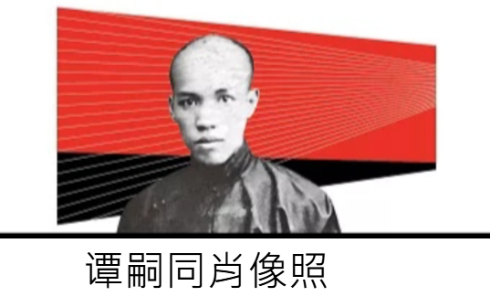
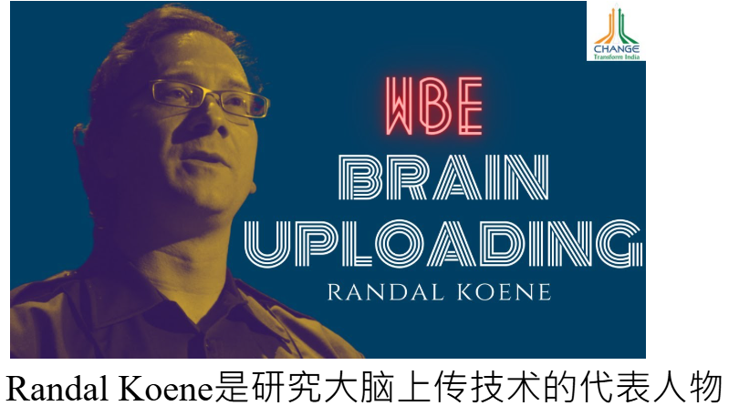
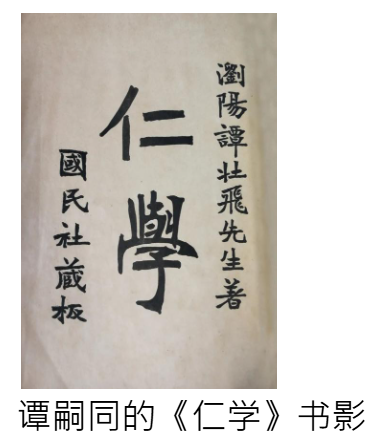
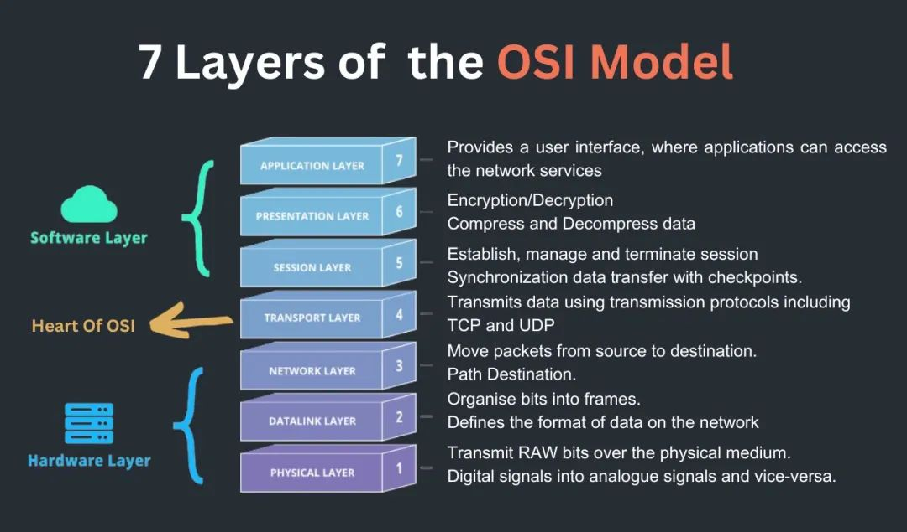
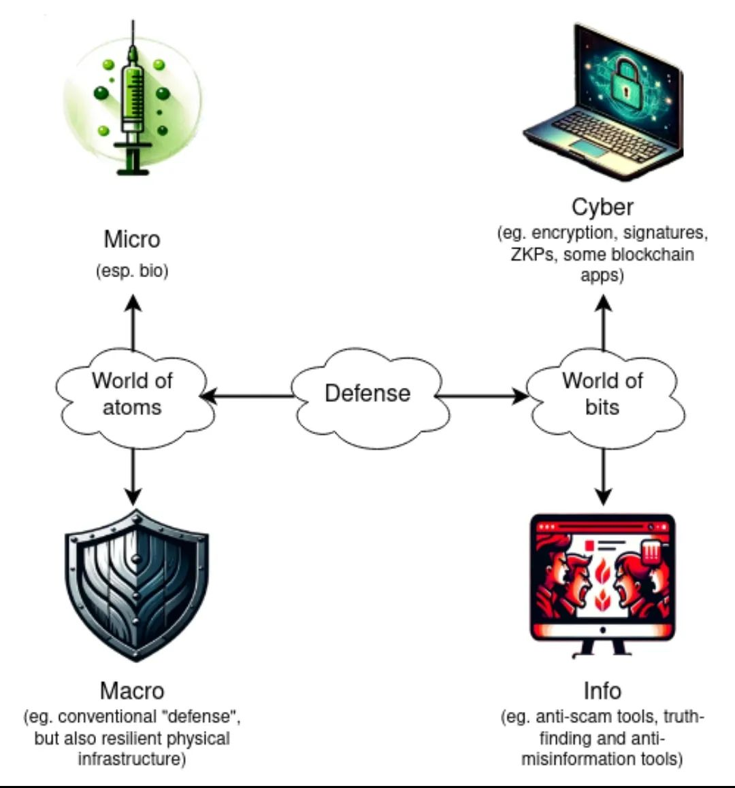
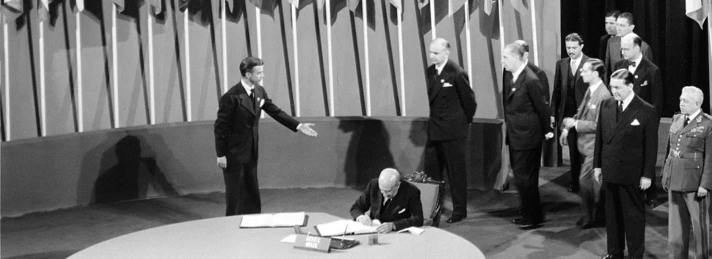
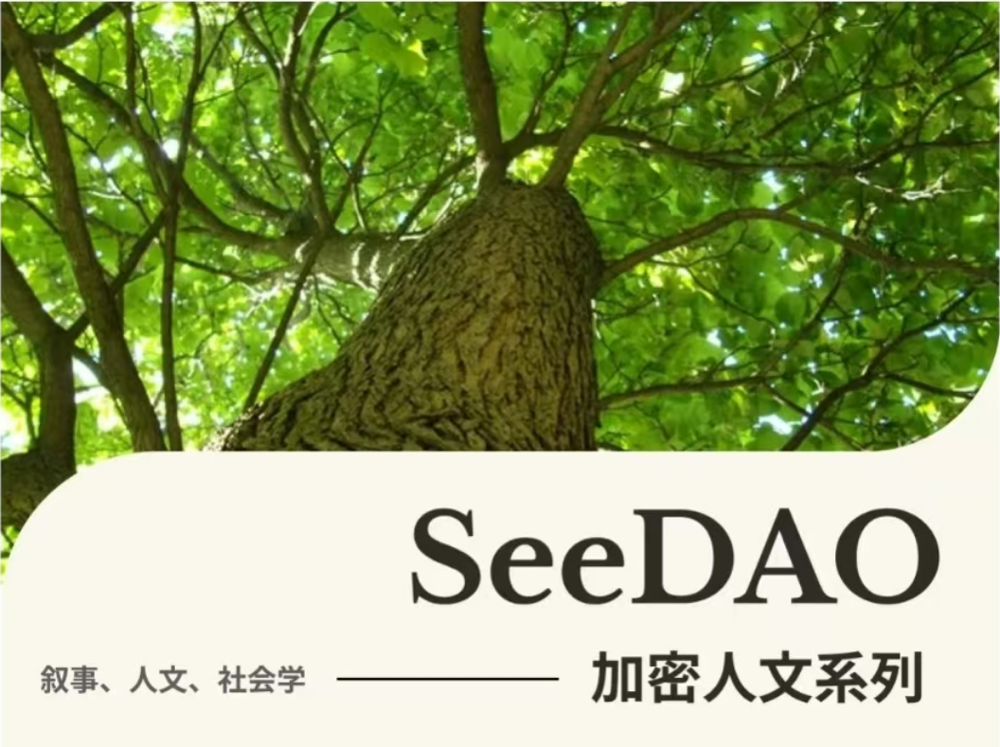

造访北京的时候，看到了菜市口大街东侧的浏阳会馆，清末变法领袖“戊戌六君子”之一的谭嗣同在1898年策动新政时曾在里面住了一个多月，变法失败后他也在菜市口旁的刑场引颈就戮。这一建筑如今可能正在整修，我途经的时间是昏暗的傍晚时分，从外头只能勉强瞥见里面的工人在施工，而保安倦怠地守在门口。
在变法前不久，谭在《仁学》一书中介绍他的革命学说：“仁以通为第一义”---他从连通性的角度重新诠释了中国传统思想里的“仁”，并引用西方的概念“以太”，以及医学生理学关于神经（称之为脑气筋）的知识，认为以太以及神经电信号机制都是连通世界的媒介，主张心灵之力将打破世上一切窠臼桎梏，“冲决网罗”。
在以太坊之前，以太最早是古希腊人设想的宇宙基本元素，近代西方哲学家如莱布尼茨与黑格尔都思考过以太，而恩格斯在《自然辩证法》中说以太是光传播的介质，这是17~19世纪物理学家的设想，直到爱因斯坦的狭义相对论之后才被学界抛弃。谭嗣同对以太的认识借助于美国商人乌特亨利一本带有伪科学性质的身心灵书籍《治心免病法》，反映了当年以太一词在西方社会的流行泛滥，但谭的重点显然不在身心灵，而是论证人类将走向全球连通，中国不可陷于闭塞而拒绝交流发展。
通过人类心智“以太化”的泛心论想象，谭嗣同对未来的设想显得奇异地赛博，那是某种超人类主义式的未来，人类意识在改造甚至摆脱生物性身体后，可以进入新的阶段：“如今之电学，能无线传力传热，能照见筋骨肝肺，又能测验脑气体用，久之必能去其重质，留其轻质… 人既日趋于灵，亦必集众灵人之灵，而化为纯用智、纯用灵魂之人… 可以飞行往来于诸星诸日...”。

在这一想象中，人类将通过“去其重质，留其轻质”的技术卸除生物身体，不断增强智能而变为“集众灵人之灵”的超级意识。谭也提及技术进步会伴随风险，但立场近于乐观的加速主义，像AI取代人类这样的问题是他无法虑及的。
然而120多年后，这种风险似乎是必须认真应对的问题。从Vitalik Buterin的观点来看，脑机接口与心灵上传可能是人类避免被AI宰制唯一的办法，同时忧心地强调“最好由一个以安全为重点的开源运动在这一路径扮演主导角色...。”
从等级宰制到平等开放
谭嗣同之所以看重以太这个概念，是因为他相信事物的通约化---首先找到万物的共通元素，然后可以将表面上各不相同的事物由此来进行理解，不齐之物乃在认识上可以齐，而共通元素在技术上也可以构建贯通一切的媒介管道，以太与电都有着这样的作用。
科学将超越主观的狭隘偏见，使得各种事物可以客观地理解为相同元素的变化组合，共同物质基础的发现也意味着人类可以建构共通技术，如建设跨国交通设施、全球贸易、通信技术、货币技术、语言编码互译、开发农矿资源等等。

在中国传统思想中，“仁”是复数的人之间的耦合亲善，同时也有感受的含义，例如中医典籍将肢体失去感觉称为“麻木不仁”，认为是气血不通畅所导致。不过在传统农村里中心化的宗族生活形态下，“仁”的流动主要被局限在差序格局的网络里，谭嗣同的思想最特别之处在于将“仁”一下子去中心化、普遍化了：对他来说中国不与其他国家交流往来，同样是严重的“麻木不仁”，而在现代社会中“仁”的基准应该是平等的朋友关系。
清末的中国社会已在酝酿后来的巨大变革，新的思想、技术与制度在进入中国，民主主义的社团、组织及政党也将击败效忠君权的旧文官集团。对谭嗣同来说“仁”始终是指向人的平等互待，但是传统社会的“名教”---“君为臣纲、父为子纲、夫为妻纲”的不平等名分体系（向权势对齐）一直有着更大的宰制力量，他相信“仁”将击败迂腐落后的三纲名教。
谭嗣同并没有在他的书里提到“协议”二字，但所谓的名教可说即是传统中国社会中占有统治地位的协议制度，而他对未来世界的愿景则朝向超越国界的共识，例如“立一法，不惟利于本国，必无损于各国，使皆有利；创一教，不惟可行于本国，必合万国之公理，使智愚皆可授法”，所构想的弱小国家共建的欧亚大铁路“作为万国公路...众擎共举...溥利于万国”则是由各国共同建造、共同获利的公共物品。
从纸莎草封面到协议计算化
中文的“协议”一词对应于西文的“protocol”，这个词最早是源于中世纪拜占庭希腊语，是一种粘在纸莎草文件正文前面的卷首页，用来表示是官方文件，也可能有保护的作用，到了15世纪的中古法语开始用来指会议初步达成的共识草案。“Protocol”作为“元信息”或“预先框架”的这种含义在现在的用法中还看得见影子。
当任何媒介通过一套中介过程来处理及传送信息，参与方需要首先在处理及传送的方式上建立协调，事实上人类在信息传送之外的各种日常工作也都有着类似的多方对齐。从互联网技术的运作可以看到流程的参与方并不限于人类，协议是在复数的人、事、物之间做出一些规定，让它们可以按照这些规定来进行交互活动。
计算机网络协议的OSI模型
作为人、事、物处理方法的“protocol”在各种领域都看得到，例如科学家将实验的步骤完整记录成“protocol”，那么其他人就可以按照该“protocol”进行验证及复现。还有另一个常见的用法是用“protocol”来指国际外交的行为准则或礼仪，例如外交官如何适当地进行交谈、如何递交国书、如何计划与准备会议，规划贵宾的座位安排等等。
大语言模型的计算是基于庞大的协议存储集中化：Transformer模型基于人类历史上的各种文本作为数据集进行训练，学会预测文字序列中机率最高的下一个字词是什么。这意味着模型习得了人类生活各种脉络中的惯例、逻辑、风格及规则，以之为依据生成上下文连贯的序列，也就是根据这些惯例、逻辑、风格及规则而产出新的应用。
通过协议的存储集中化，以及大规模的数字化与计算化，人工智能对世界上各种协议的熟悉度与处理速度远超过人类大脑。Gavin Wood在2014年提出Web3的愿景，是通过去中心化的区块链协议，让用户拿回个人信息的所有权；然而就在Web3还在缓慢摸索前进之际，Web2.0的平台化数据积累，已经迅速孵化出中心化的人工智能巨灵。
d/acc 与 协议之仁
在“My techno-optimism”一文中，Vitalik Buterin提出了d/acc哲学，或者“防御性/去中心化/差异化加速主义”，用最粗略的话来说d/acc意识到个人或社会必须能够不被灾害击垮才可能维持自主发展。我们才刚经历全球性的Covid-19疫情灾难，世界上的进攻性技术也已经越来越强大，普通人需要更好的防御性技术来抵挡传染病、军事攻击、政治压迫、网络暴力。
面对AI与人类间力量的不对等，他主张最好的方式是人机结合，从工作流程到运作方式上将人类智能及AI进行整合，使得人类智能与之同步增强而非被抛在后头，换言之两者不只是对齐更是交融。从区块链技术的角度出发，AI可以作为助手或玩家而接入到协议运作当中，或者人类社区可以通过区块链而拥有及管理自己的社区AI模型。
Vitalik对防御性技术的分类
我赞同d/acc致力赋能民权，也很期待更有效的防御性技术，但这里我想带入比狭义的技术更广泛的脉络，也就是再回到协议的视野。我们日常生活在无数的协议或共通体系里，协议是一层层/layered组装衔接的。假设你正在地铁里用手机上网阅读一篇文章，使你可以进行阅读的不只是HTTPS或MIPI的技术协议，还包括眼睛里的光敏蛋白基因、文章所使用的语言、地铁里的秩序规范、目的地的导航路线...这是无数协议技术复合而成的世界。
各式各样的协议都需要不断改善，关于协议很重要的一件事是，虽然协议是在复数的人、事、物间建立协同，但它们并不是不会偏颇的，事实上技术协议可能欠缺兼容性及扩展性，可能是闭源的，可能彼此冲突；而社会协议可能是服务于权力者而压制弱势者的，却以半强迫的方式取得了弱势方的同意，在今天最常见的例子之一就是平台的用户协议。
典型的外交礼仪protocol
协议之仁是协议的更加平等化。在数字协议的脉络里，它可能是用户不再受到平台的操纵与摆布，是区块链二层网络更贴近大众的易用性及扩展性，是P2P的自由联合的交换模式。如果将数字协议与线下协议结合起来讨论的话，它可能是贫困民众的跨越数字鸿沟并获得新技术的力量，或者通过自动翻译技术进行跨语种交流。在线下社会协议的脉络里，它应当是全球贫困民众生活的改善，是国际和平治理的促进，是世界上各种压迫性的“名教”的消除。
以上的平等化有些是通过数字技术，有些则不是，但不论是否通过数字技术，这些平等化彼此之间都应该是盟友，例如区块链二层网络肯定有助于非洲贫困民众的日常使用，而消除“父为子纲”、“夫为妻纲”的压迫体系，则有助于阿富汗女性及年轻人自由探索数字技术。
P2P就是朋友的自由联合
距离谭嗣同引颈就戮已过去126年，这一时间说短不短，说长亦不长。技术奇点似乎已经并非遥不可及，但无国界的平等世界愿景却正在疫情、战争与逆全球化震荡中遭受阻碍。无论如何至少今日的菜市口大街周边一带交通繁忙，办公大厦、居民楼、景点、咖啡店及书店繁荣的景象，已取代那个时代贫困及残酷的记忆画面。
20世纪的世界经历过一波波巨大的冲突及变革，谭嗣同当年的思想既渺茫也超前，他的政见极快被压制，但理念主张却没有过时。我并不相信他所相信的灵魂不灭观，但是感到他的思想意识确实通过文本而有了比肉身更长的生命，没有人想过谭嗣同跟互联网极客的先锋愿景有什么关系，但其精神确实相通。
谭嗣同相信“仁以通为第一义”而“通之象为平等”，所有社会关系中以朋友关系最为自由平等，他指的并不只是私人友谊，还特别强调“倡学会、联大群”的自组织即是朋友的自主结合，但凡在世界上“能自主者兴，不能者败”，社会应该以平等自主的方式组织起来，这事实上就是我们今天所谈论的P2P理念。
此刻全球政治经济的前景混沌不明，而技术的加速正进入史无前例的阶段，迈向P2P新世界的路途道阻且长，但无论哪里有麻木不仁，则哪里必然有仁，新的路径将不断开辟。
P2P理念 ：《Peer to Peer: The Commons Manifesto》
